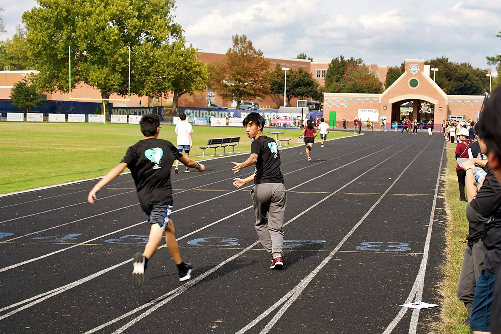

2026–27 School Calendar 行事曆
Families 家長專區Every Sunday not listed below: regular classes, 1:30–4:30pm at Cabin John Middle School.

August 八月 2026
SUN30
First day of school 開學
Semester 學期September 九月 2026
SUN6
No school — Labor Day weekend
No school 停課SUN20
Back to School
Event 活動SUN27
Mid-Autumn Festival 中秋節慶祝
Event 活動October 十月 2026
SUN18
Field Day 運動會At Churchill HS — not Cabin John
Event 活動SUN25
Costume Parade 變裝遊行
Event 活動November 十一月 2026
SUN1
Midterm exams 期中考Daylight saving time ends
Exam 考試SUN15
Taiwan's iconic animals 台灣特有動物
Event 活動SUN29
No school — Thanksgiving weekend
No school 停課December 十二月 2026
SUN6
Mandarin Open House & Taiwanese Talent Show華語班開放日 · 台語才藝表演
Event 活動SUN13
Winter Solstice 冬至
Event 活動SUN20
No youth classesTCML adult classes online
No school 停課SUN27
Winter break 寒假
No school 停課January 一月 2027
SUN3
No youth classesTCML adult classes online
No school 停課SUN10
Final exams 期末考
Exam 考試SUN17
No school — MLK weekend
No school 停課SUN24
Spring semester begins 春季班開學
Semester 學期February 二月 2027
SUN7
Lunar New Year & Taiwan Fun 新年
Event 活動SUN14
No school — Presidents' Day weekend
No school 停課SUN28
Taiwan Memorial Day 二二八紀念
Event 活動March 三月 2027
SUN14
Midterm exams 期中考Daylight saving time begins
Exam 考試SUN28
Spring break 春假
No school 停課April 四月 2027
SUN4
Spring break 春假
No school 停課SUN11
Taiwan Ancestors' Day
Event 活動SUN25
Mandarin talent show 華語才藝表演
Event 活動May 五月 2027
SUN9
Mother's Day celebration 母親節
Event 活動SUN23
Final exams & Graduation 期末考・畢業典禮
Exam 考試SUN30
No school — Memorial Day weekend
No school 停課June 六月 2027
SUN6
Picnic & Closing Ceremony 結業野餐Summer break begins
Event 活動